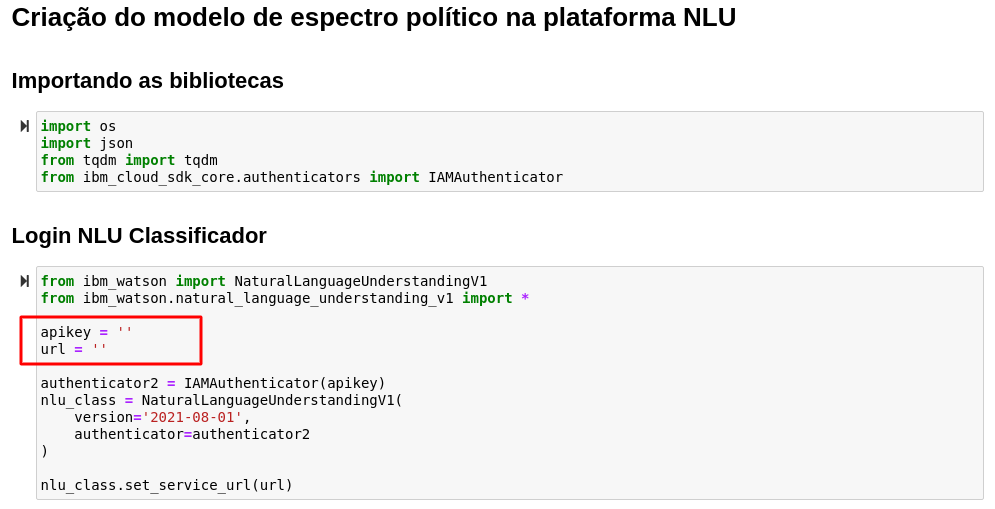

Treinamento do Modelo de Polaridade Política
Esquerda x Direita
A primeira parte deste tutorial consiste no treinamento de um modelo que analisa o quanto uma notícia tem polaridade política de Esquerda ou de Direita.
O modelo foi criado utilizando o ferramenta NLU e os dados utilizados para o treinamento foram notícias de jornais políticamente opostos.
A Carta Capital se institula como tendo um viés progressista, sendo alinhada à esquerda política.
Já a Jovem Pan
Missing
nao acho nada ligado a Jovem Pan
Warning
Colocar referencia do vies dos jornais
Coleta de dados
As notícias utilizadas foram coletadas por meio do script Treinamento.ipynb. A biblioteca Beautiful Soup da linguagem Python foi utilizada para fazer um web crawl do website de cada um dos jornais escolhidos. Esse script cria o arquivo training_data.json que contém os dados de treinamento e será utilizado para a criação do modelo.
Warning
Trocar nome do arquivo treinamento para ColetaDados.ipynb
Treinamento do Modelo
Para o treinamento é necessário rodar o script Criação Modelo.ipynb que manda para o NLU os dados coletados no formato JSON com os textos e a tag "esquerda" ou "direita".

Nota
- Coloque as chaves de acesso do seu NLU salvada anteriormente nas variáveis de configuração do ambiente
- Salve o model_id gerado pelo NLU